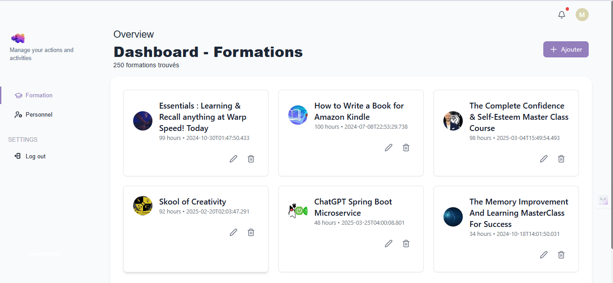

1. Introduction
La formation professionnelle continue est essentielle pour l’évolution des compétences des employés et la performance des entreprises. Ce projet vise à concevoir et développer une application web permettant la gestion complète des formations au sein du centre « Excellent Training » de la société « Green Building ».
Contexte : La digitalisation des processus de formation est devenue incontournable pour les centres de formation modernes. Elle permet d’optimiser la gestion administrative, d’améliorer l’expérience utilisateur et de garantir la traçabilité des actions.
Problématique : Comment centraliser, sécuriser et automatiser la gestion des formations, tout en offrant une interface intuitive à chaque acteur ?
2. Objectifs du Projet
- Informatiser la gestion des formations, des participants, des formateurs et des statistiques.
- Faciliter la planification, le suivi et l’évaluation des sessions de formation.
- Offrir des droits adaptés à chaque type d’utilisateur (administrateur, responsable, simple utilisateur, formateur).
- Garantir la sécurité des données et la conformité RGPD.
- Permettre la génération automatisée de rapports et de statistiques détaillées.
3. Analyse des Besoins
Acteurs principaux
- Administrateur : Accès illimité, gestion des utilisateurs, domaines, structures, profils, et toutes les tâches des autres acteurs.
- Responsable Centre : Consultation et analyse des statistiques, validation des formations, suivi des indicateurs clés.
- Simple Utilisateur : Gestion des formateurs, formations et participants, consultation du catalogue, inscription aux sessions.
- Formateur : Animation des formations, gestion de la présence, évaluation des participants, accès aux ressources pédagogiques.
Principales fonctionnalités
- Authentification et gestion des droits (JWT, Spring Security).
- Gestion des utilisateurs et des rôles avec hiérarchisation des accès.
- Gestion des structures, profils, domaines et catalogues de formation.
- Gestion des formations (création, modification, ajout de participants, gestion des salles et plannings).
- Gestion des participants et des formateurs (historique, progression, évaluations).
- Gestion de la présence des participants par le formateur (émargement numérique, alertes d’absence).
- Consultation, génération et filtrage des statistiques (tableaux de bord dynamiques).
- Notifications par email et tableau de bord personnalisable.
4. Architecture technique
Environnements de développement matériel
- Premier PC : Asus 10G
- Système d'exploitation : Windows 11
- Disque dur : 512 GO SSD
- RAM : 8 Go
- Processeur : Intel(R) Core(TM) i3-10110U - Deuxième PC : Gigabyte G5
- Système d'exploitation : Ubuntu 22.04
- Disque dur : 512 GO SSD
- RAM : 32 Go
- Processeur : Intel Core i5-12500H
Environnements de développement logiciel
- Backend : Spring Boot (Spring Web, Spring Data JPA, Lombok, etc.), sécurité assurée par Spring Security et authentification JWT.
- Base de données : PostgreSQL, schéma relationnel optimisé pour la gestion des entités et des relations.
- Frontend : React.js, interfaces responsives et dynamiques.
- UI/UX : Tailwind CSS et Material UI pour des interfaces modernes et ergonomiques.
- Génération de données de test : Faker.js, jeux de données réalistes pour la validation.
Les logiciels utilisés
- Visual Studio Code : Éditeur de code principal utilisé pour le développement, offrant des fonctionnalités avancées, des extensions et une interface intuitive.
- Postman : Outil de test et de validation des API, permettant de simuler des requêtes, d’automatiser des scénarios et d’assurer la fiabilité des échanges backend/frontend.
- Git et GitHub : Gestion du versionnement du code, sauvegarde, suivi des modifications et collaboration efficace entre les membres de l’équipe.
Cette architecture modulaire et moderne permet d’assurer la sécurité, la maintenabilité, la performance et l’évolutivité de la solution, tout en facilitant l’ajout de nouvelles fonctionnalités selon les besoins futurs.
5. Modélisation UML
5.1 Diagramme de cas d'utilisation
Ce diagramme présente les interactions principales entre les acteurs et le système, illustrant les cas d’utilisation majeurs (gestion des utilisateurs, gestion des formations, consultation des statistiques, etc.).

5.2 Diagramme de classes
Le diagramme de classes détaille la structure des entités (Utilisateur, Formation, Participant, etc.) et les relations entre elles. Il permet de visualiser l’organisation des données et les dépendances métiers.

5.3 Diagrammes de séquence
Les diagrammes de séquence décrivent le déroulement temporel des interactions entre les acteurs et le système pour différents scénarios (inscription, gestion de la présence, génération de rapports, etc.).
Simple utilisateur Responsable centre
Responsable centre
 Administrateur
Administrateur
 Formateur
Formateur

6. Conclusion
Ce projet offre une solution complète, moderne et évolutive pour la gestion de la formation professionnelle. Il permet d’automatiser les tâches, d’améliorer la traçabilité et la prise de décision, tout en garantissant la sécurité, la conformité et la simplicité d’utilisation. Des perspectives d’évolution incluent l’intégration de l’IA pour la recommandation de parcours, l’export PDF, et la gestion multi-centres.
Annexes : Captures d’écran
Page d'accueil

Page de connexion

Espace Administrateur
Espace Responsable
Espace Formateur
Espace Utilisateur
Ajout d'un utilisateur